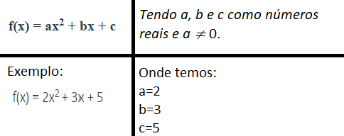
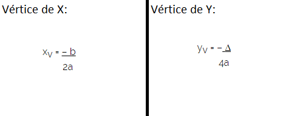
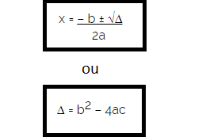
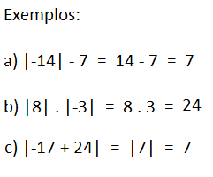

Função Quadrática, ou Função polinomial de 2º Grau é uma função representada pela seguinte expressão:

Para fazer um gráfico existe alguns passos importantes na hora de fazê-lo, nos quais são:
Avaliar a Função:
Descobrir as coorenadas do vértice:
O Vértice da Parábola é o seu ponto máximo no caso de A menor que 0, ou eu po to de mínimo no caso de A > 0.
Podemos encontrar esses pontos substituindo os valores de A, B e C nas seguites fórmulas:
Determinar as raízes:
É de extrema importância colocá-las no gráfico, quando existirem, é claro. Para achá-las, o Y terá de valer 0, para que assim seja possível obter uma equação do segundo grau, assim sendo resolvida por fórmula de Bhaskara.
Essa fórmula de Bhaskara pode mudar conforme a fórmula do discriminante, são elas:
Uma Função Modular é aquela que associa elementos de um conjunto em módulos.
O Módulo é representado pelas barras ("| |"), e independente de qual o valor dentro delas, os seus números serão sempre positivos.
Ou seja, se há uma função descrita por x=|-2|, ela terá que ser descrita como x=2.
Gráficos:
Quando vamos representar um módulo negativo em um gráfico, ele irá parar na intersecção e voltar no sentido ascendente do mesmo.
Isso porque tudo o que há na parte inferior do gráfico possuí valor negativo, mas se tratando de Funções modulares, os módulos negativos retornam valores positivos.
Exemplo:
| X (Domínio) | Y (Contradomínio) |
|---|---|
| |-10| | |-10| = 10 |
| |-5| | |-5| = 5 |
| |-1| | |-1| = 1 |
| |0| | |0| = 0 |
| |1| | |1| = 1 |
| |5| | |5| = 5 |
| |10| | |10| = 10 |
Propriedades:
A) Quando temos x ∊ R, teremos |x| = |-x|;
B) Quando temos x ∊ R, teremos |x²| = |x|²=x² ;
C) Quando temos x e y ∊ R, teremos |x.y| = |x| . |y|;
D) Quando temos x e y ∊ R, teremos |x+y| ≤ |x| + |y|.